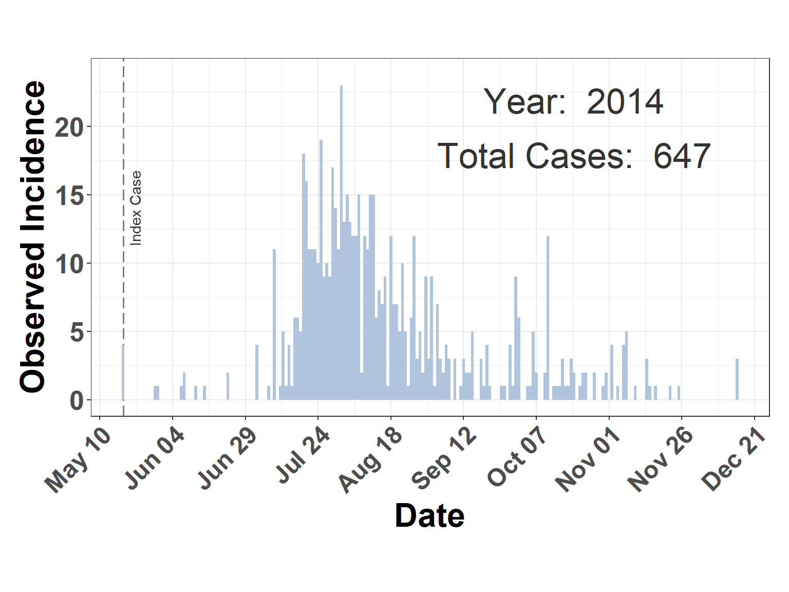
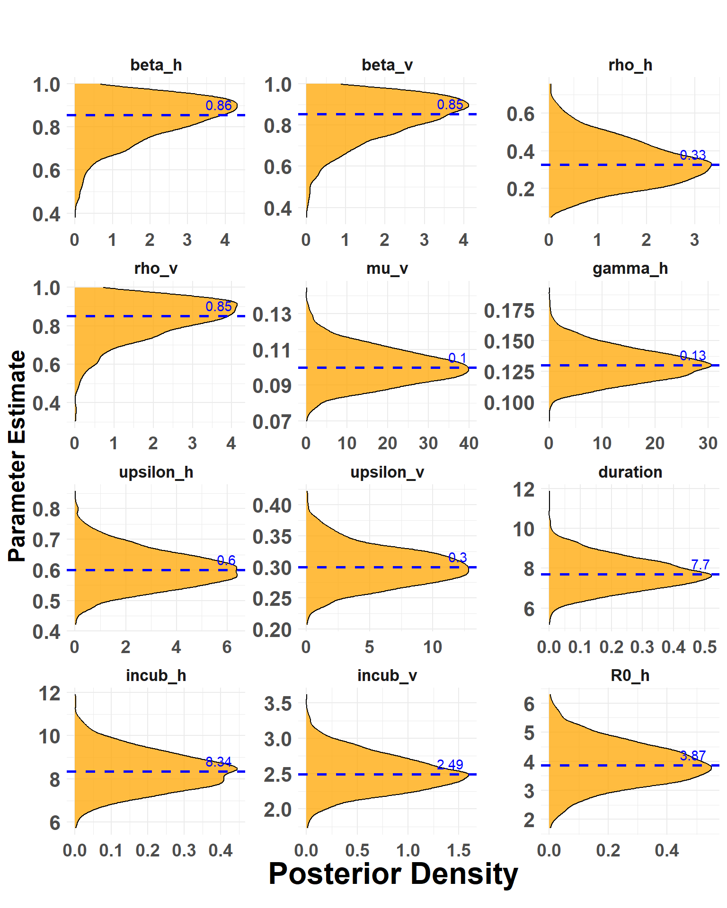
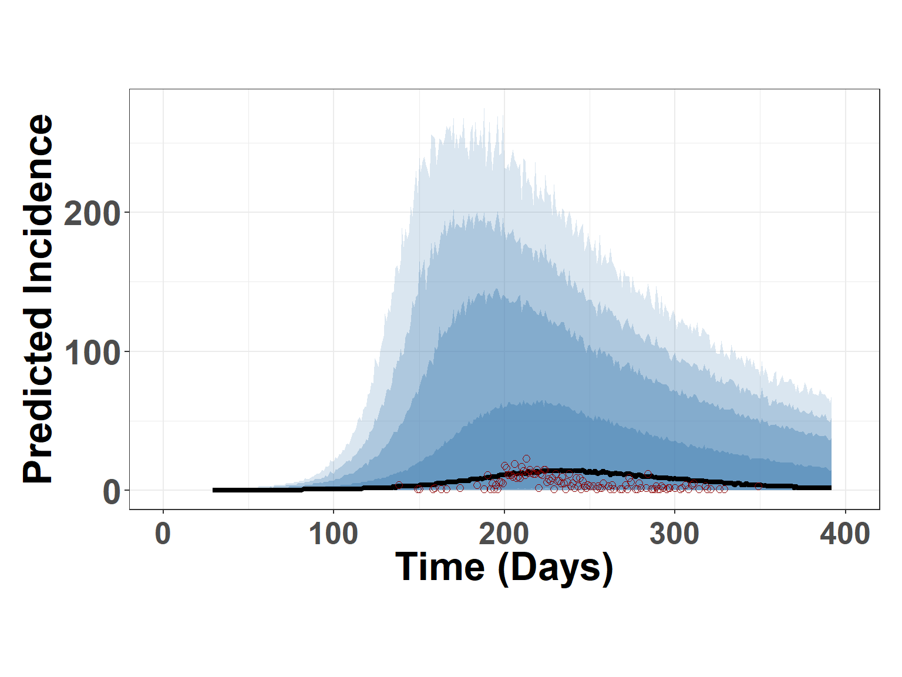

This site provides a demonstrative workflow and supporting information for the publication: Mechanistic Insights into the 2014-2015 Vesicular Stomatitis Outbreak in the United States: A SEIR-SEI Compartmental Model Analysis
Large model objects, incidence data, and other archived information are available on the Open Science Framework: Project OSF site: https://osf.io/vqgxs/. The R-function get_data_osf() is provided to download and load these data as needed.
Workflow Synopsis
This script provides an overview of the methodologies and code presented in the publication above. Note that data, code, and website configuration files, as well as code for the VSV ShinyApp, are available on the project’s GitHub site and OSF Project site. Executed Stan model objects are approximately 200mb in size, code to download and read these objects is provided in the script.
For simplicity, this workflow will demonstrate analysis for outbreaks observed in 2014, however the workflow can be applied to 2015 outbreaks with minimal modification. The PAGE CONTENTS menu in the right upper corner can be used to navigate to specific sections.
Parameters and Formula
Model Parameters
Brief descriptions of parameters used in the model. Note that additional information and cited sources for selected parameter values are provided in the associated publication.
Mechanistic aspects of the model can can be diagrammatically represented as shown below. Note that in case of both the vertebrate hosts (h subscript) and vectors (v subscript), the term \rho influences the number of exposed individuals (E) that proceed to the infectiousness compartment (I).
in which the first two lines give the Force of Infection (FOI, \lambda’s) for hosts and vectors respectively and \rho parameters (range 0.00-1.00) potentially reduce the size of the exposed (E) populations used in calculating the number of infectious individuals (I).
Model Preliminaries
Before constructing a Bayesian model in Stan (Stan Installation), we first visualize the data and construct an exploratory compartmental model using non-Bayesian Ordinary Differential Equations (ODE) and the deSolve Package.
Needed Libraries
Load needed R-Packages and custom functions.
Hide code
library(here) # to manage directorieslibrary(tidyverse) # data wranglinglibrary(deSolve) # for exploratory modelslibrary(ggdist) # visualizationslibrary(rstan) # interface with Stan from Rrstan_options(auto_write =TRUE) # optionsoptions(mc.cores = parallel::detectCores())library(cmdstanr) # additional Stan options in Rcheck_cmdstan_toolchain(fix =TRUE, quiet =TRUE)register_knitr_engine()# custom functions (mostly plotting) source(here("./R/utilities.R"))source_dir("./R")
Observed Incidence
Read observed incidence data as a data frame called truth_df and create a simple plot figure. Note that 2014 and 2015 data are available in the vsv_ind_truth.rds object.
Contents for truth_df
date: Estimated date of disease onset (symptoms) as determined by examination at time of inspection.
count: Number of individuals animals with Vesicular Stomatitis (VS)
susc: Number of individual animals located with same herd or on same premises as confirmed animal. These values are assumed to reflect susceptible animals.
year: Year of confirmed VS onset.
doy: Integer 1-365 reflecting the day of year for the date.
Hide code
truth_df <-get_data_osf("vs_inc_truth") |>filter(year ==2014) # change to 2015 to examine 2015 data
Loading required package: httr
Warning: package 'httr' was built under R version 4.2.3
File downloaded successfully and saved as vs_inc_truth.rds
Hide code
str(truth_df)
'data.frame': 117 obs. of 5 variables:
$ date : Date, format: "2014-05-18" "2014-05-29" ...
$ count: int 4 1 1 1 2 1 1 2 4 1 ...
$ susc : int 65 3 3 5 4 1 11 79 7 6 ...
$ year : num 2014 2014 2014 2014 2014 ...
$ doy : num 138 149 150 158 159 163 166 174 184 188 ...
Hide code
plot_incidence(truth_df)

Figure 1: Observed VS incidence 2014.
Exploratory Model
Before coding a Stan model, model parameters are through construction of a relatively simple Ordinary Differential Equations (ODE) model using the deSolve package. This model uses discrete, user specified values and does not incorporate uncertainty.
Initial Parameters
Parameters are describe in the Table at top of page. The specific values given in this example were arbitrarily selected from the ranges evaluated in the full model (presented later in script).
Figure 3: Comparison of incident infections. Line labeled Infected indicates the number of new indiduals added to the Exposed compartment per time step, whereas the line labeled Symptomatic refers to the number of new individuals added to the infectious compartment. The ratio of the sums for the Infected and Symptomatic curves is shown as Estimated rho in the plot. This reverse calculation demonstrates what the rho competency parameter is doing in the model.
Bayesian Model
Having demonstrated model parameter relationships using the ODE function above, a full Bayesian model is next constructed in Stan. The Bayesian approach allows for parameters to specified based on what is currently understood about VSV hosts, vectors, and epidemiology. This done through prior distribution specifications. The Bayesian approach also provides for better accounting of uncertainty in the model.
In addition to translating the SEIR-SEI equations (Equation 1) to the Stan language, a likelihood function is needed as well as incorporation of an additional observation error term to help account for the difference between disease cases as observed and documented and the case number (theoretically) needed to propagate the disease, assuming the model’s mechanistic parameters accurately reflect the reality of the VS epidemiology.
Prior Model
Before incorporating observed data into the model, a prior model is coded and evaluated to ensure that assumptions about prior distributions are reasonable.
Note that the Stan code above includes a negative binomial distribution that samples from estimated incidence. The SEIR-SEI ODE equations estimate prevalence but not incidence. Therefore, the code first estimates incidence (new infections each day) using the susceptible (S) and exposed (E) compartments. A small value (1e-8) is included to prevent incidence from being negative on the initial iteration. The code as shown in the transformed parameters block is,
for (i in1:n_days-1){ incidence[i] = -(y[i+1, 2] - y[i, 2] + y[i+1, 1] - y[i, 1]) + 1e-8; }
Later in the generated quantities block, incidence is used in sampling from the NgBinomial,
real pred_infected[n_days-1]; pred_infected = neg_binomial_2_rng(incidence, phi);
Consdering that incidence is estimated from the daily change (\Delta \text{I}_{t}) in infections (virus exposures), and this quantity is used to sample from the NegBinomial, the notation with prior distributions couldbe shown as,
# total host populationN =14160# time steps n_days =365t =seq(0, n_days, by =1)t0 =0t = t[-1]# orgainize data for Stan data_seir =list(n_days = n_days, t0 = t0, ts = t, N_h = N, N_v =300*N)str(data_seir)
List of 5
$ n_days: num 365
$ t0 : num 0
$ ts : num [1:365] 1 2 3 4 5 6 7 8 9 10 ...
$ N_h : num 14160
$ N_v : num 4248000
Hide code
# number of MCMC stepsniter =2000# number of chains, only a short run for prior modelnum_chains <-2# unique initial values for each chaininit_list <-vector("list", num_chains)for (i in1:num_chains) { init_list[[i]] <-list(beta_h =rbeta(1, 10, 1),gamma_h =rlnorm(1, log(0.15), 0.1),sigma_h =rlnorm(1, log(0.17), 0.1), sigma_v =rlnorm(1, log(0.3), 0.1),beta_v =rbeta(1, 15, 100),mu_v =rlnorm(1, log(0.1), 0.1),upsilon_h =rlnorm(1, log(0.25), 0.1),upsilon_v =rlnorm(1, log(0.15), 0.1), i_0 =runif(1, 1, 2),e_0 =runif(1, 1, 2),ev_0 =runif(1, 1, 2),iv_0 =runif(1, 1, 2))}
Read stan model
The Stan code above is saved as a text file. It is read in to memory.
File downloaded successfully and saved as prior_model.rds
Hide code
class(prior_model)
[1] "stanfit"
attr(,"package")
[1] "rstan"
Check results
Parameter Distributions
Parameter distributions are plotted with medians as a visual check. In addition to parameters specified in prior distributions, the Extrinsic Incubation Period (incub_v), Intrinsic Incubation Period (incub_h), and basic reproduction number (R0_h) are shown in Figure 4. The EIP and IIP are respectively calculated as the reciprocal of the estimated \sigma_v and \sigma_h parameters. The reproduction number (R_0) is calculated as \beta_h \cdot \upsilon_h/\gamma_h.
Hide code
plot_params_posteriors(prior_model)
No id variables; using all as measure variables

Figure 4: Distributions from modeled priors. Dashed lines show the median value for each parameter.
Prior Predictive Distributions The prior model does not have information (data) about the number of observed number of VS cases, therefore predictions here (Figure 5) are based only on incidence as estimated from the SEIR-SEI ODE system and the prior distributions intended to capture mechanistic aspects of VS epidemiology. As a prior predictive check, it’s assumed that predictions will have considerable uncertainty, which is the case in Figure 5, however it is also case that the median counts across the random draws are near the truth.
Figure 5: Random draws from posterior predictive distribution. Blue lines show sampled trajectories exceeding the model estimated median values for each day, where as the height of the orange color gives the estimated daily median. Height of black points indicate observed daily incidence.
To visualize the prior predictions differently, credible intervals can plotted along with the estimated median prediction (Figure 6).
Warning: Using `size` aesthetic for lines was deprecated in ggplot2 3.4.0.
ℹ Please use `linewidth` instead.

Figure 6: Figure displays summary credible intervals (blue shading) and medianprediction from the prior predictive model. Height of red points indicate observed daily incidence.
Full Bayesian Model
Although parameter values from the prior model are reasonable based on current understanding of VS epidmiology, draws from the prior predictive posterior show far too much uncertainty to have confidence in the model.
To improve the model, the Stan code is updated to include the following elements:
Observed Incidence
The data block shown in the code is modfied to take observed incidence as an input. The observed incidence is referred to as cases in the code.
data {...int cases[n_days];}
The model block is revised to include the observed cases when sampling from the NegBinomial.
model {...cases[1:(n_days-1)] ~ neg_binomial_2(incidence, phi);}
Observation Bias
In addition to incorporting observed incidence, the model a new model parameter is added to account for underreporting and other possible errors in the observations. The bias parameter is designated as \kappa and used to reduce incidence as estimated by the SEIR-SEI system.
The new \kappa parameter in the transformed parameters block,
and the \kappa prior specification is added to the model block.
model { ... kappa ~ beta(15, 100);}
With the addition of \kappa, the previously described sampling distribution (Equation 2) becomes, \begin{align} \nonumber
\text{Y}_{t}|\theta &\sim \text{NegBinomial}(\text{Y}|\Delta\text{I}_{t}\bold{\kappa}, \phi) \\ \nonumber
\end{align}
Pointwise Log-Likelihood
Lastly, code is added to the generated quantities block to facilitate some checks after the model is run.